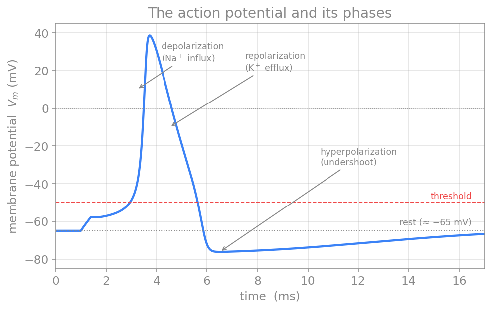
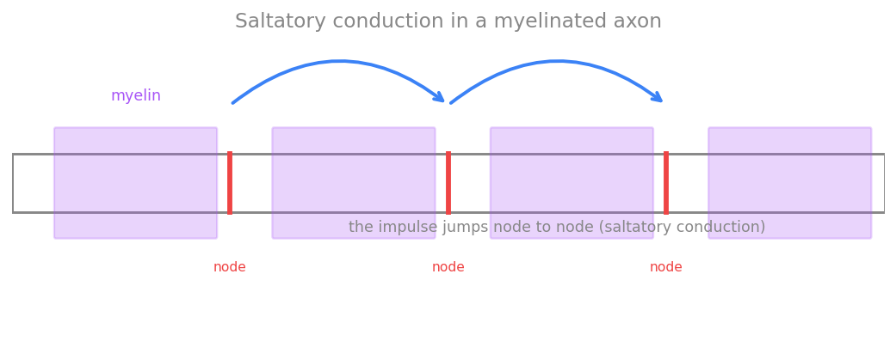
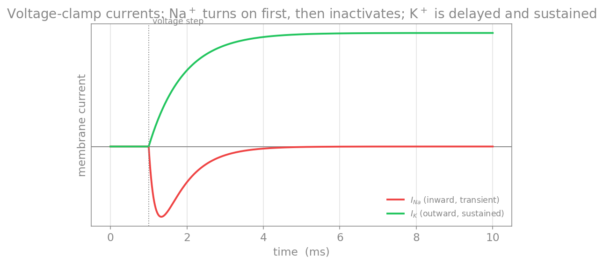

پتانسیل عمل و انتشار
تا اینجا غشا را در رژیمِ زیرآستانه دیدیم، جایی که رفتارش خطی و مانندِ یک مدارِ RC بود. اما ویژگیِ تعیینکنندهٔ نورون، توانایی آن در تولیدِ پتانسیلِ عمل است: یک موجِ گذرا و بسیار سریع از وارونگیِ پتانسیلِ غشا که در امتدادِ آکسون منتشر میشود و پیامِ عصبی را حمل میکند. این فصل، تصویرِ کیفیِ پتانسیلِ عمل را کامل میکند و پلی میزند به مدلِ کمّیِ هاجکین–هاکسلی که آن را به معادله بدل میکند.
در پایانِ این فصل خواهید توانست
- رفتارِ همهیاهیچ و مفهومِ آستانه را توضیح دهید.
- سازوکارِ یونیِ پتانسیلِ عمل را بهصورتِ یک چرخهٔ بازخوردِ مثبت و سپس مهارِ آن شرح دهید.
- نقشِ دورهٔ بیپاسخی را در محدودکردنِ بسامد و یکسویهکردنِ انتشار دریابید.
- هدایتِ جهشی و نقشِ میلین را توضیح دهید.
آستانه و پاسخ همهیاهیچ
اگر غشا را اندکی دپلاریزه کنیم، تا وقتی از یک آستانه (نوعاً حدودِ ۵۵− میلیولت) نگذشتهایم، تنها یک پاسخِ کوچکِ زیرآستانه میگیریم و غشا به استراحت بازمیگردد. اما بهمحضِ عبور از آستانه، یک پتانسیلِ عملِ کامل برانگیخته میشود. نکتهٔ کلیدی این است که دامنهٔ پتانسیلِ عمل به شدتِ محرک بستگی ندارد: محرکِ زیرآستانه هیچ اسپایکی نمیسازد، و هر محرکِ فراتر از آستانه اسپایکی با دامنهٔ تقریباً یکسان میسازد. به این ویژگی همهیاهیچ میگویند — و همان چیزی است که در فصلِ تحریکپذیری آن را بهزبانِ سیستمهای دینامیکی (نقطهٔ ثابت، آستانه، چرخهٔ حدی) بازخواندیم.

پتانسیلِ عمل و فازهای آن: دپلاریزاسیونِ سریع (ورودِ سدیم)، رپلاریزاسیون (خروجِ پتاسیم)، و فرابیشقطبش پیش از بازگشت به استراحت. خطچینِ قرمز آستانه و خطچینِ خاکستری سطحِ استراحت را نشان میدهد.
سازوکارِ یونی: یک چرخهٔ بازخوردِ مثبت
پتانسیلِ عمل، نتیجهٔ رقصی دقیق میانِ دو دسته کانالِ وابسته به ولتاژ است. نخست، دپلاریزاسیونِ آغازین کانالهای سدیمیِ وابسته به ولتاژ را میگشاید. چون \(E_{\text{Na}}\) بسیار مثبت است، سدیم بهسرعت به درون سرازیر میشود و غشا را مثبتتر میکند؛ این خود کانالهای سدیمیِ بیشتری را میگشاید، و چرخه خود را تقویت میکند. این بازخوردِ مثبت همان است که به پتانسیلِ عمل سرشتِ انفجاری و همهیاهیچ میدهد و \(V_m\) را بهسوی \(E_{\text{Na}}\) بالا میبرد — دقیقاً همان جابهجاییِ وزنِ یونها که در نمودارِ گلدمن دیدیم.
اما این صعود متوقف میشود، به دو دلیلِ همزمان:
- غیرفعالشدنِ کانالِ سدیمی: کانالهای سدیمی پس از باز شدن، با تأخیری کوتاه بهطورِ خودکار غیرفعال میشوند؛ دریچهٔ دومی جریانِ سدیم را میبندد، حتی اگر محرک هنوز برقرار باشد.
- باز شدنِ کانالِ پتاسیمی: کانالهای پتاسیمیِ وابسته به ولتاژ (یکسوسازِ تأخیری) کندتر پاسخ میدهند و نزدیکِ قله باز میشوند؛ خروجِ پتاسیم، غشا را دوباره منفی میکند (رپلاریزاسیون).
چون کانالهای پتاسیمی با تأخیر بسته میشوند، غشا اغلب مدتی کوتاه از استراحت هم منفیتر میشود — فرابیشقطبش. سپس کانالها به حالتِ استراحت بازمیگردند.
دورهٔ بیپاسخی
غیرفعالشدنِ کانالِ سدیمی پیامدی مهم دارد: بلافاصله پس از یک پتانسیلِ عمل، تا وقتی کانالهای سدیمی از حالتِ غیرفعال بیرون نیامدهاند، غشا نمیتواند اسپایکِ تازهای تولید کند. این بازه را دورهٔ بیپاسخی (نسوز) مینامند. این دوره دو نقشِ کلیدی دارد: نخست، بسامدِ شلیک را به یک بیشینه محدود میکند؛ دوم، تضمین میکند که پتانسیلِ عمل تنها رو به جلو منتشر شود و به عقب بازنگردد.
انتشارِ پتانسیلِ عمل
پتانسیلِ عمل در یک نقطه تولید میشود اما باید بدونِ افت در سراسرِ آکسون منتشر شود. سازوکار، جریانهای مدارِ محلی است — همان جریانهای محوریِ نظریهٔ کابل: ناحیهای که وارونه شده با ناحیهٔ مجاورِ در حالِ استراحت اختلافِ پتانسیل دارد، و جریانِ محلی ناحیهٔ بعدی را تا آستانه دپلاریزه میکند. چون هر نقطه پتانسیلِ عمل را از نو میسازد، دامنهٔ سیگنال در طولِ مسیر کم نمیشود — برخلافِ افتِ نماییِ سیگنالِ غیرفعال. (این همان تفاوتِ کابلِ فعال و غیرفعال است، تمرینِ پایانیِ فصلِ کابل.)
میلین و هدایتِ جهشی
در بسیاری از آکسونهای مهرهداران، غلافی عایق به نامِ میلین بخشهایی از آکسون را میپوشاند و مقاومتِ غشا را بالا و ظرفیتِ خازنی را پایین میبرد. کانالهای سدیمی تنها در شکافهای میانِ قطعاتِ میلین — گرههای رانویه — متمرکزند، پس پتانسیلِ عمل بهجای بازتولیدِ پیوسته، از گرهی به گرهِ بعد میجهد: هدایتِ جهشی.

هدایتِ جهشی: کانالهای سدیمی در گرههای رانویه (قرمز) متمرکزند و پتانسیلِ عمل از گرهی به گرهِ بعد میجهد؛ در نتیجه هدایت بسیار سریعتر و کمهزینهتر میشود.
میلین سرعتِ هدایت را بسیار بالا میبرد (تا حدودِ ۱۲۰ متر بر ثانیه) و مصرفِ انرژی را کاهش میدهد. از دست رفتنِ میلین در بیماریهایی مانندِ اماس هدایت را مختل میکند.
چگونه اینها را اندازه میگیریم؟
دانشِ ما از این جریانها، که پایهٔ مدلِ هاجکین–هاکسلی است، از چند روشِ تجربیِ هوشمندانه آمده. در تثبیتِ ولتاژ (voltage clamp)، آزمایشگر پتانسیل را در مقداری ثابت نگه میدارد و جریانِ لازم برای این کار را اندازه میگیرد — جریانی که دقیقاً قرینهٔ مجموعِ جریانهای یونی است. هاجکین و هاکسلی با همین روش بر آکسونِ غولپیکرِ ماهیِ مرکب، جریانِ سدیم و پتاسیم را از هم جدا کردند.

جریانهای یک آزمایشِ تثبیتِ ولتاژ: با یک پلهٔ دپلاریزهکننده، نخست جریانِ سدیمِ روبهداخل (قرمز) بهسرعت روشن و سپس غیرفعال میشود، و با تأخیر جریانِ پتاسیمِ روبهبیرون (سبز) روشن میماند.
روشِ دقیقترِ تثبیتِ قطعه (patch clamp) رفتارِ تککانالها را آشکار میکند، و تحلیلِ نوفه پیش از آن اجازه میداد شمار و رساناییِ کانالها را بهصورتِ آماری برآورد کنند.
بهسوی مدلِ کمّی
همهٔ آنچه در این بخش ساختیم — غشای عایق، کانالهای گزینشی، پتانسیلهای تعادل، مدارِ RC، و کانالهای وابسته به ولتاژ — اکنون آمادهٔ آن است که به یک مدلِ کمّی بدل شود. کافی است در معادلهٔ موازنهٔ جریانِ فصلِ RC، جریانِ نشتیِ خطی را با جریانهای سدیم و پتاسیمِ وابسته به ولتاژ جایگزین کنیم. حاصل، مدلِ هاجکین–هاکسلی است — موضوعِ بخشِ بعد.
تمرینها
-
همهیاهیچ. چرا دامنهٔ پتانسیلِ عمل به شدتِ محرک بستگی ندارد، اما بسامدِ شلیک بستگی دارد؟ این را با ایدهٔ آستانه و دورهٔ بیپاسخی توضیح دهید.
-
دورهٔ بیپاسخی و بیشینهٔ بسامد. اگر دورهٔ بیپاسخیِ مطلق حدودِ ۲ میلیثانیه باشد، بیشینهٔ بسامدِ شلیک تقریباً چقدر است؟
-
میلین. با استفاده از رابطهٔ ثابتِ طولِ \(\lambda=\sqrt{R_m/R_a}\) از فصلِ کابل، توضیح دهید چرا بالابردنِ \(R_m\) توسطِ میلین به هدایتِ سریعتر کمک میکند.
-
(پروژه) با مدلِ هاجکین–هاکسلی، رفتارِ همهیاهیچ و آستانه را بهصورتِ عددی بازتولید کنید: جریانهای زیرآستانه و فراآستانه را تزریق کنید و نشان دهید که تنها دومی یک اسپایک میسازد.